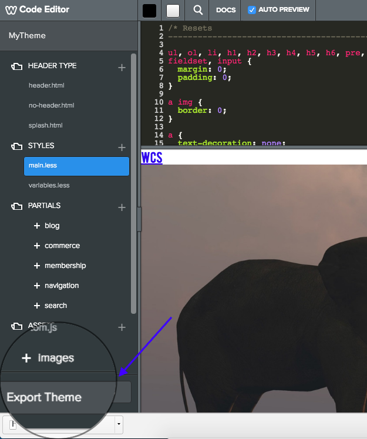

Import themes to bring them into the Weebly editor where you can edit and test them. You import themes using the Weebly UI. Export themes to create a zip file used to distribute the theme.
Import a Theme Using the Weebly UI
Weebly themes must be provided as a ZIP file (directory structure here). Styles must live in main_style.css or main.less (if using LESS). Make sure you’ve included all images and other assets.
Note: The zip file must contain the contents of the theme’s root directory, and NOT the root directory folder itself. If you create your zip from a source control app like GitHub, the zip may include that root folder. You’ll need to extract and then rezip only the contents (and not the root directory) before importing into Weebly.
To import a theme:
Open your test site. In the Weebly editor, click the Design tab.
Click Change Theme, and at the bottom, click Import Theme.
To apply your theme to your site, go to Design > Change Theme, click Custom Themes, and click Choose to apply it, or Edit to edit the theme.
Export a Theme
Once you’ve completed your theme, use the Weebly editor to zip it up for you.
Open your test site. In the Weebly editor, click the Theme tab.
At the bottom, click Edit HTML/CSS.
Click Export Theme.

Export a theme
Your theme will be downloaded and is ready for distribution.
Note: All themes use the same default partials, which are available only in the Editor. Only customized partials are downloaded when you export a theme. So if you want to work in an external tool and want to change a partial, make a small change first in the Weebly editor, and then export the theme.
Use the Cloud Admin to make the theme available to your customers.